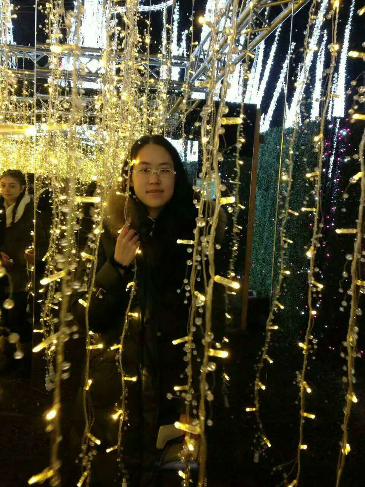
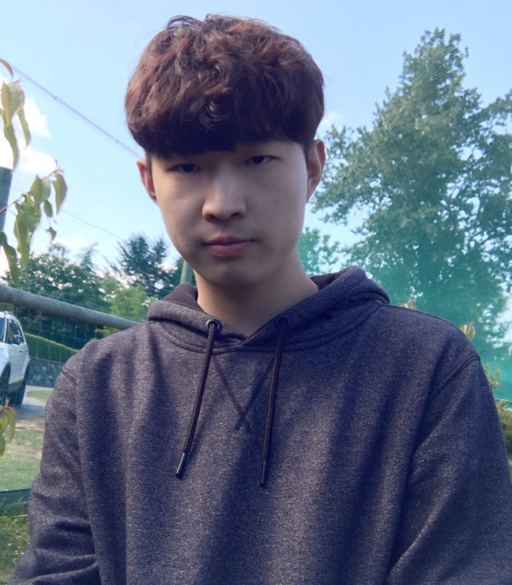

WonderCNF
WonderCNF
About Us
We are a group with four members: Victor, Samuel, Grace and Bob.
Chang Chen(Victor)
Chang was born in Chongqing Province, China and spent most of his life there. After moving into Vancouver a while, he decided to study computer programming. He feels computers are so fascinating since he was a kid. Even though he had very few experence on programming, he has the faith to become a very good programmer.
Jianhui Jiang（Samuel）
Samuel used to work in HP and NetApp, and has some experience about servers, storages and OS. In his 35, he moved to Vancouver with his family. Samuel likes outdoor activities. In his first year in Vancouver, he accomplished the Vancouver half-marathon. The reason why he decide to study in CST is that he is very interesting in computer technology.
Yijia Cheng(Grace)

Grace was born in Anhui Province, China in 1997. She had been Vancouver about two years. She loves animals especially birds. Also, she likes playing piano.Her favorite game is Minecraft.Because of this game, she wants to learn more about computer. Therefore, she choose the CST program.
Zibo Wang(Bob)

Zibo Wang (Bob) was bored in China in 1995. He is an international student and learning programing in BCIT. He has been Vancouver around two years since 2015. This guy is crazy loves every kind of games, especially League of Legends and H1Z1 (King of the Kill), he spend a lot of free time on these games. Bob’s dream is to find high salary job in Google, and he will work hard to make the dream come true.